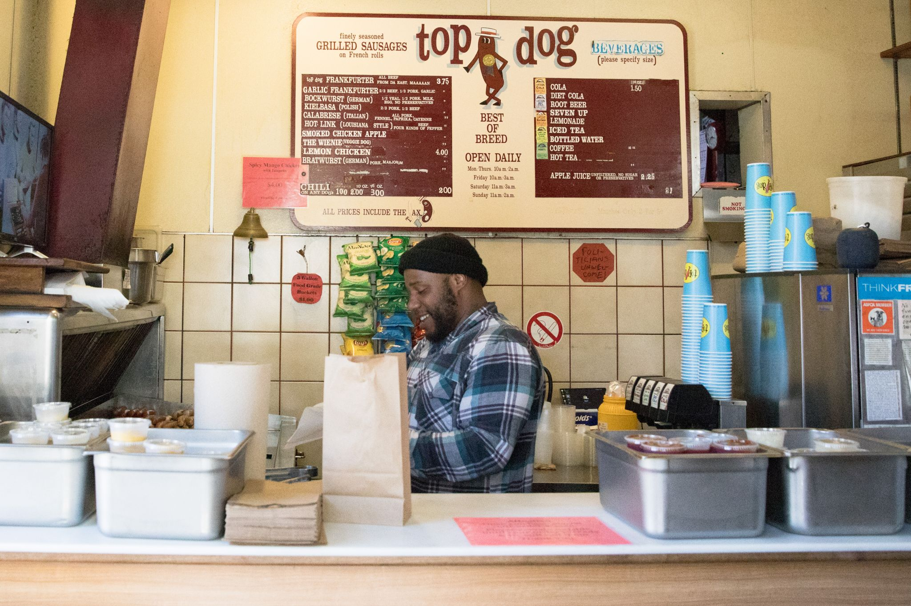

top dog™ IS - well, special. And not just that we've been selling fine hot dogs in Berkeley, Oakland and elsewhere around The Bay since 1966. Rather, that its originator was introduced by his German immigrant parents to traditional top-quality European-style sausages when only a boy in New York before World War II. Then also there were the many excellent kosher-style frankfurters in hot dogs at pushcarts, stands and restaurants everywhere. Hot dog heaven!
Truth to tell, that boy grew up preferring a good “tubesteak” to an ordinary steak. And still does. That love of, that reverence for a top hot dog became top dog™, only by then the scene was San Francisco Bay and the tradition of just a typical skinless frankfurter or wiener sausage in a hot dog sandwich was forever altered. top dog™ became the first to offer hot dog fans a choice among a significant variety of quality sausages including the best eastern kosher-style all-beef frankfurter in a memorable bun, our top dog. Onward!
We've been cookin' up quality dogs since 1966 and with 3 locations around Berkeley and Oakland, we're bound to satisfy more than just your hunger.

SOUTHSIDE
2534 Durant Ave Berkeley, CA 94704
Phone: (510) 843-5967
Open everyday
Mon-Thur 10 A.M - 2 A.M
Friday 10 A.M - 3 A.M
Saturday 11 A.M to 3 A.M
Sundays & Holidays 11 A.M to 2 A.M.
Center Street
2160 Center St Berkeley, CA 94704
Phone: (510) 849-0176
Open Monday-Wednesday 10 A.M. - 5 P.M.
Thur-Fri 10 A.M. - 5 P.M.
Sat-Sun 11 A.M. - 5 P.M.
Lakeshore
3272 Lakeshore Ave, Oakland, CA
Phone: (510) 419-0333
Open Mon-Wed 10 A.M - 8 P.M
Thu-Sa 10 A.M.-8 P.M.
Su 11 A.M. - 6 P.M.